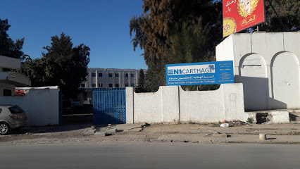

L'Ecole Nationale d’Ingénieurs de Carthage (ENICarthage) est un établissement d’enseignement supérieur publique, relevant de l'Université de Carthage, créé (décret n° 2002-1623 du 9 juillet 2002), en tant que Ecole Supérieure de Technologie et d’Informatique (ESTI), en 2002 et transformé en école nationale d’ingénieurs recrutant ses élèves à partir du concours national d’ingénieurs à partir de septembre 2012 (décret n° 2014-4677 du 29 décembre 2014).
Etant habilitée à délivrer des diplômes de Maîtrise depuis 2002 et ayant intégré le système LMD depuis la rentrée 2007, Cette école a offert plusieurs formations spécialisées dans les domaines du Génie Electrique, de l’Informatique et de la Gestion Industrielle, parmi lesquelles des formations d’ingénieurs en sciences appliquées et Technologie.
